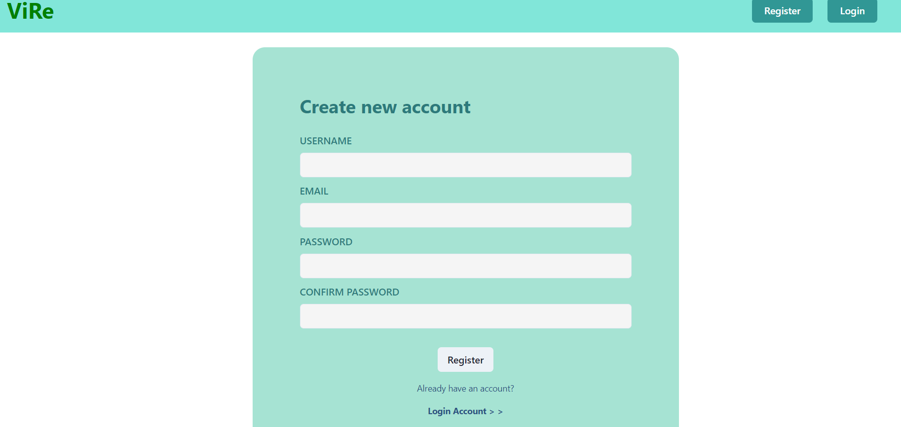
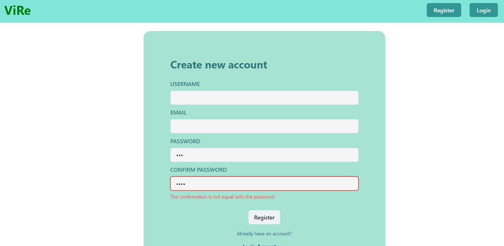
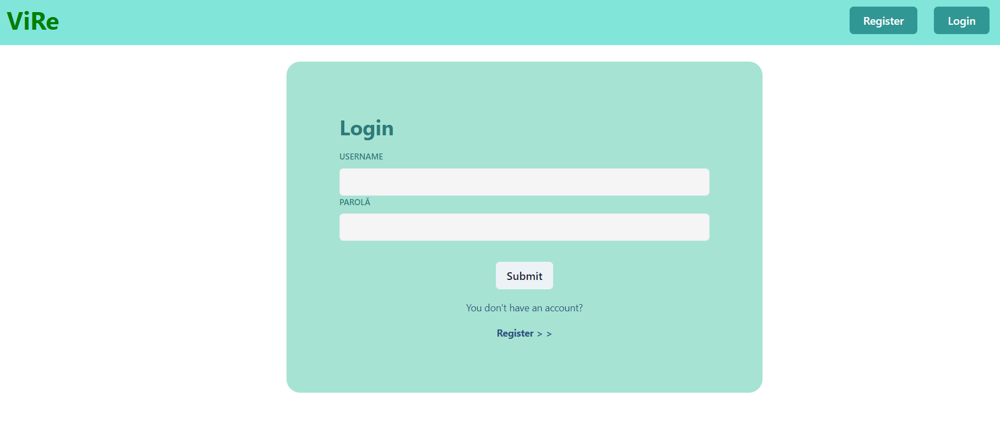
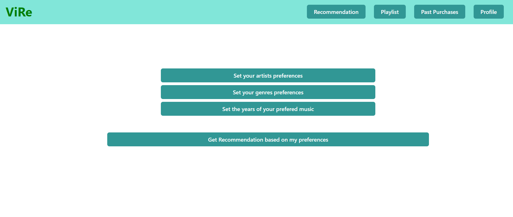

VIRE Technical Report!
1. Project description
Web system able to "intelligently" recommend vinyl music records according to various criteria: preferences (such as "I always like/love/prefer classical music, especially opera music by Rossini or Verdi and performed by Angela Gheorghiu or Juan Diego Flórez; I sometimes like progressive rock and post-rock; I like only metal albums released before 2000; I always dislike/hate rap and hip-hop; I dislike songs produced by Flood in the last 25 years"), past song purchases on various music stores, playlists – available online via music streaming services: Last.fm and alternative solutions – and/or locally – for instance, by uploading a JSPF/XSPF document.
2. User Manual
How do I access the application?
You can access some functionalities of the application without having a valid account, but in order to have all the functionalities you need to create an account and to sign-in
How can I create an account?
In order to create the account you need access the register page and enter a valid username, email and password(all the fields are required). If this operation is succesful you will be redirected to the login page and from now on you can access all the functionalities.
If you already have an account you can go to the login page
Register panel
If the data is not valid you will receive an error and you will need to re-enter the data
Example of error on register panel
How can I access my account?
After you succesfuly created an account you login into the application using it. In order to do that you need to access the login page and enter there the credentianls for your account
Login panel
How can I get vinyl recommandations?
You can access the vinyl recommendation in multiple ways:
- Based on your input
If you want the get recoomendations based on a multiple criterias selected by you, you will need to access the following page:
Recommendation panel
As it can be seen there you have multiple filters like: artist preferences, genre preferences or release year preferences:
For example if you click on the Set by artists preferences button you will be prompted to select from a list of artists you like and a list of artists you dislike

Recommendation panel
- Based on Discogs Data
- Based on platlists